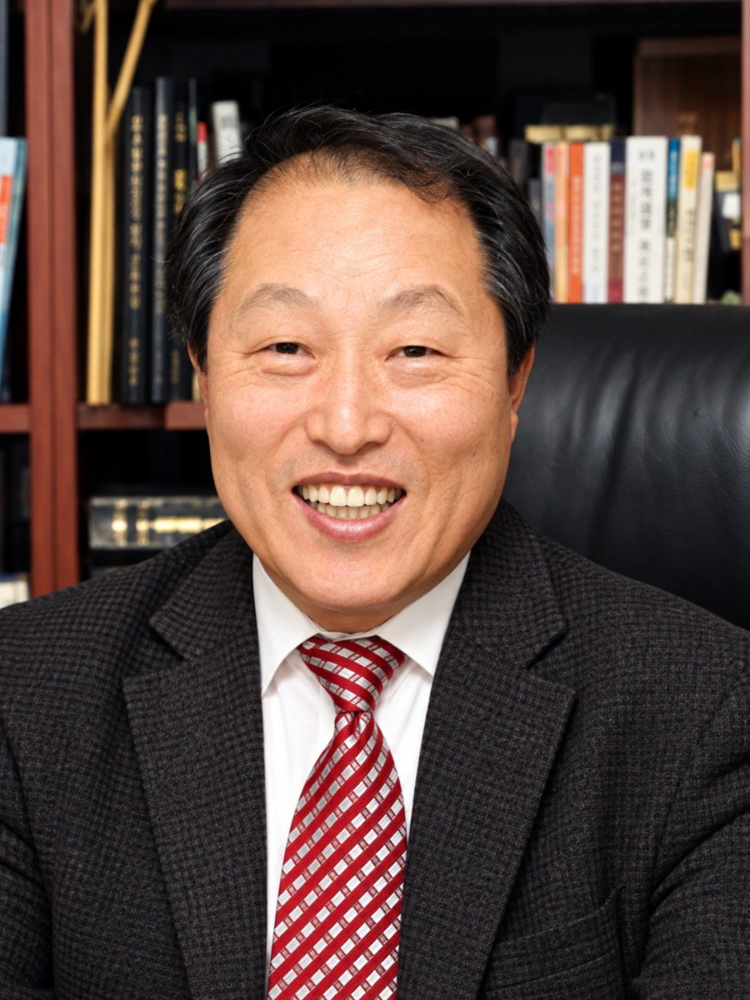

Founded in 2020 by God’s grace and providence, our school, TGU, has now reached its fourth anniversary.
When our first president, Dr. Kim Yeon-taek, moved to Chilchil International University in India, I humbly assumed responsibility for this precious ministry as TGU’s second president in 2024.
Our school previously offered joint doctoral degree programs in missiology and ministry in partnership with universities in India. Twice a year, approximately twenty students came to Korea for two weeks of intensive study at Songwol Academy, hosted by Songwol Presbyterian Church in Incheon. However, circumstances at our partner institutions in India prevented us from continuing these programs, making it necessary to establish new goals for our school.
Our school was founded in response to the Lord’s call to equip the workers needed in today’s churches and mission fields.
We recognize that seminaries in Korea and many other countries are facing declining enrollment, and that the educational landscape is changing rapidly in the age of artificial intelligence. After prayer and several rounds of discussion, our faculty agreed on a direction for the school.
We decided to sign a memorandum of understanding with Harvest University, which began its effective online ministry before we did, and to offer joint degree programs.
We therefore established three goals.
First, we aim to provide free online education to future leaders in Southeast Asia, Africa, and other regions who have been unable to receive training because of difficult circumstances. In doing so, we follow the Lord’s words: “Freely you have received, freely give.”
Second, we aim to revisit our students in their home countries and provide intensive instruction, helping them apply what they have learned to their actual ministries.
Third, we also decided to offer students applying from Korea the opportunity to study at minimal cost, supporting them so that they can serve effectively in their churches and mission fields.
With the firm conviction that God has called us to this ministry, we are praying for fellow workers and supporters to join us.
We ask for your faithful prayers and participation.
Give all glory to God.
Your prayers and support for TGU ministries help us raise faithful gospel ministers with a burning heart for world evangelization.